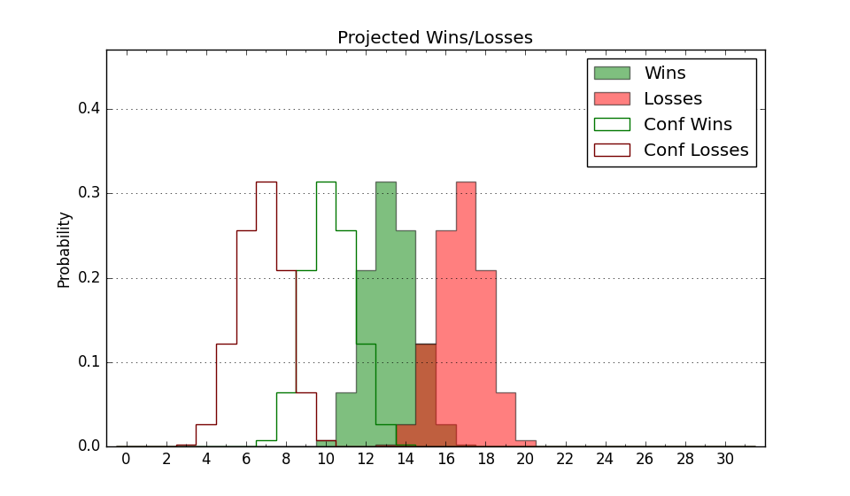

| Home | Game Probabilities | Conferences | Preseason Predictions | Odds Charts | NCAA Tournament |
| City: | Commerce, Texas | |
| Conference: | Southland (4th)
| |
| Record: | 7-3 (Conf) 10-13 (Overall) | |
| Ratings: | Comp.: -12.1 (302nd) Net: -12.1 (301st) Off: 96.3 (289th) Def: 108.4 (283rd) SoR: 0.0 (158th) |
| Remaining | ||||||
|---|---|---|---|---|---|---|
| Date | Opponent | Win Prob | Pred. | |||
| 2/9 | Northwestern St. (212) | 44.8% | L 68-69 | |||
| 2/11 | @ Northwestern St. (212) | 19.3% | L 64-73 | |||
| 2/16 | New Orleans (356) | 83.2% | W 77-66 | |||
| 2/18 | Southeastern Louisiana (290) | 60.7% | W 73-70 | |||
| 2/23 | @ Tex A&M Corpus Chris (222) | 20.8% | L 67-77 | |||
| 2/25 | @ Incarnate Word (340) | 47.2% | L 66-67 | |||
| 3/1 | Tex A&M Corpus Chris (222) | 47.2% | L 71-72 | |||
| Previous | Game Score | |||||
| Date | Opponent | Win Prob | Result | Off | Def | Net |
| 11/7 | @SMU (219) | 20.6% | L 60-77 | -6.4 | -1.2 | -7.7 |
| 11/11 | @Northern Colorado (251) | 25.5% | L 77-80 | 3.4 | -3.8 | -0.4 |
| 11/14 | @Air Force (138) | 11.3% | W 73-69 | 2.0 | 20.1 | 22.1 |
| 11/18 | (N) UNC Asheville (162) | 22.2% | L 64-72 | -7.6 | 7.1 | -0.5 |
| 11/19 | @Georgia St. (265) | 27.8% | L 53-57 | -1.0 | 7.7 | 6.7 |
| 11/20 | (N) Eastern Kentucky (194) | 26.6% | W 75-61 | 11.3 | 19.4 | 30.8 |
| 12/1 | @Hawaii (125) | 9.9% | W 53-51 | -7.6 | 32.7 | 25.1 |
| 12/4 | @Denver (272) | 29.0% | L 75-84 | 5.3 | -10.5 | -5.2 |
| 12/6 | @Wyoming (165) | 13.8% | L 76-91 | 8.5 | -11.2 | -2.6 |
| 12/10 | @Abilene Christian (198) | 16.9% | L 64-83 | 1.9 | -16.8 | -14.9 |
| 12/19 | @Fort Wayne (220) | 20.6% | L 68-85 | 2.0 | -9.1 | -7.1 |
| 12/20 | (N) IUPUI (360) | 79.8% | L 52-62 | -28.1 | -2.0 | -30.1 |
| 12/27 | @Texas (8) | 1.3% | L 72-97 | 23.6 | -11.5 | 12.1 |
| 12/31 | Incarnate Word (340) | 75.3% | W 82-74 | 2.6 | -6.3 | -3.8 |
| 1/5 | Nicholls St. (260) | 55.3% | L 63-66 | -7.2 | -1.7 | -8.9 |
| 1/7 | @McNeese St. (344) | 48.9% | W 82-80 | 15.8 | -10.0 | 5.7 |
| 1/12 | @Houston Baptist (355) | 58.7% | L 59-68 | -23.8 | 5.9 | -17.9 |
| 1/14 | Lamar (357) | 85.0% | W 81-66 | 16.6 | -5.5 | 11.1 |
| 1/19 | @New Orleans (356) | 59.3% | W 63-58 | -10.9 | 17.3 | 6.5 |
| 1/21 | @Southeastern Louisiana (290) | 31.2% | L 73-79 | 6.8 | -6.3 | 0.5 |
| 1/26 | @Lamar (357) | 62.4% | W 62-57 | 6.0 | -1.5 | 4.4 |
| 1/28 | Houston Baptist (355) | 82.9% | W 77-76 | -2.7 | -11.6 | -14.3 |
| 2/4 | McNeese St. (344) | 76.5% | W 60-58 | -16.4 | 9.2 | -7.2 |
| Stats & Trends | |||||
|---|---|---|---|---|---|
| Current | Day | Week | Month | Season | |
| Composite | -12.1 | -0.0 | -0.1 | -1.2 | -2.1 |
| Comp Rank | 302 | +1 | -1 | -12 | -25 |
| Net Efficiency | -12.1 | -0.0 | -0.0 | -1.1 | -- |
| Net Rank | 301 | +1 | -- | -10 | -- |
| Off Efficiency | 96.3 | +0.0 | -0.5 | -1.6 | -- |
| Off Rank | 289 | -- | -7 | -43 | -- |
| Def Efficiency | 108.4 | -0.1 | +0.5 | +0.4 | -- |
| Def Rank | 283 | -- | +12 | +26 | -- |
| SoS Rank | 332 | -2 | -3 | -118 | -- |
| Exp. Wins | 13.2 | -0.0 | -0.2 | -0.3 | -0.7 |
| Exp. Conf Wins | 10.2 | -0.0 | -0.2 | -0.3 | -0.1 |
| Conf Champ Prob | 3.7 | -0.3 | -4.0 | -4.0 | -13.9 |

| Advanced Stats | ||
|---|---|---|
| Stat | Value | Rank |
| Off Eff FG % | 0.480 | 277 |
| Off Ast Ratio | 0.139 | 197 |
| Off ORB% | 0.225 | 299 |
| Off TO Rate | 0.161 | 219 |
| Off FT Ratio | 0.257 | 326 |
| Def Eff FG % | 0.535 | 291 |
| Def Ast Ratio | 0.154 | 268 |
| Def ORB% | 0.271 | 194 |
| Def TO Rate | 0.151 | 218 |
| Def FT Ratio | 0.403 | 333 |